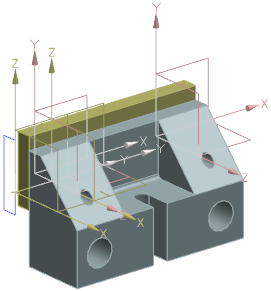
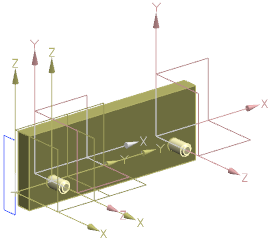

在装配导航器中，右击 des02_fixed_jaw 节点并选择替换引用集→MODEL。
固定颚板的显示将更新，您只能看到实体，而其它组件仍然显示整个部件。

您可以先打包节点，来对组件位于装配文件中同一级别的多个实例替换引用集。
右击 des02_fixed_jaw 节点并选择替换引用集→空。
组件 des02_fixed_jaw将从图形窗口中移除显示。

将 des02_fixed_jaw 的引用集更改为 MODEL。